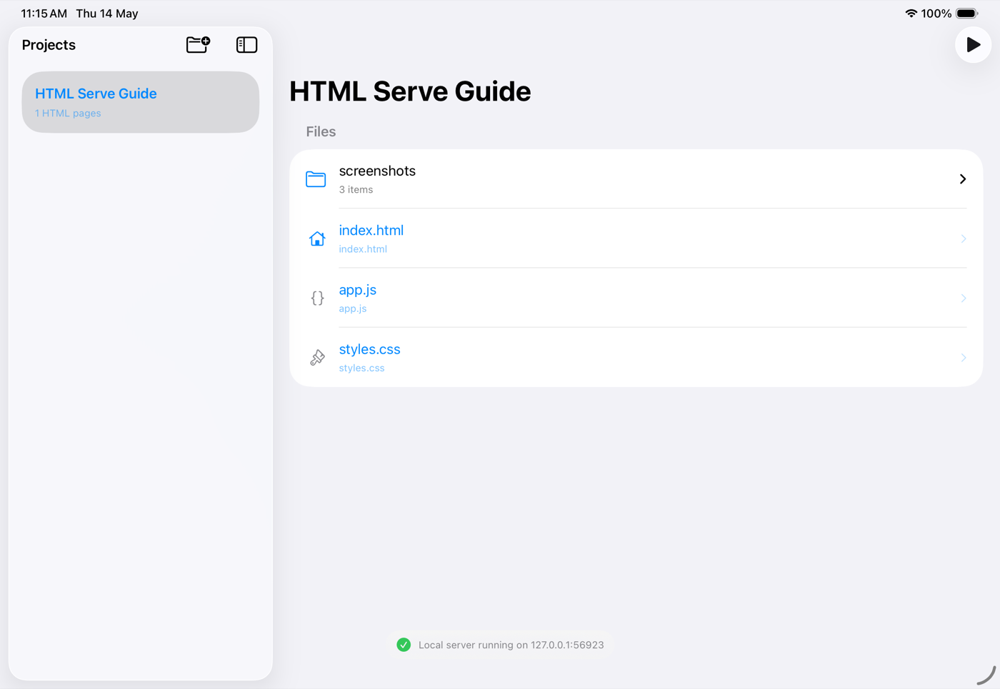
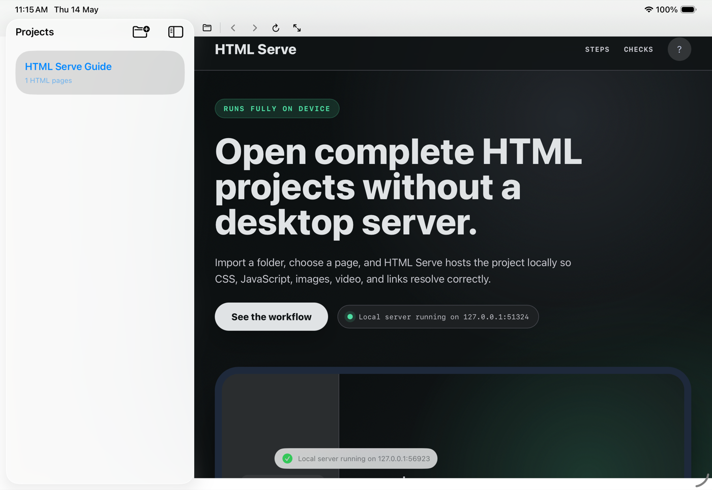

01
Import a folder
Copy your website using Files, cloud storage, AirDrop, or USB-C storage, then import the whole folder.
Import a folder, choose a page, and HTML Serve hosts the project locally so CSS, JavaScript, images, video, and links resolve correctly.
This page ships inside the app on first launch. It uses separate HTML, CSS, and JavaScript files, plus a modal interaction, so you can confirm the local server is doing real project serving.
Copy your website using Files, cloud storage, AirDrop, or USB-C storage, then import the whole folder.

The file browser keeps folders and assets visible. HTML pages open in the built-in web view with local paths intact.

HTML Serve starts a private server on the device and serves the selected files to WebKit for authentic browsing.
Plain .html, .css, .js, images, fonts, PDFs, and media files work exactly as they would on a production server.
Links like assets/app.js and ../images/photo.jpg stay inside the folder and resolve correctly in local preview.
Buttons, tabs, charts, modals, and browser-only app logic run normally with zero network dependency.